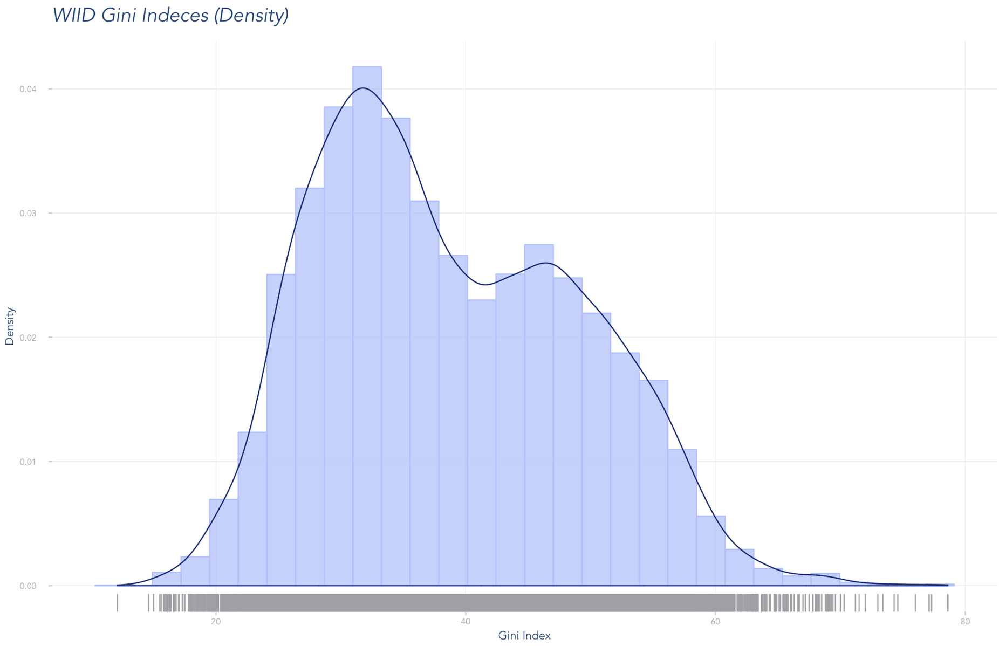
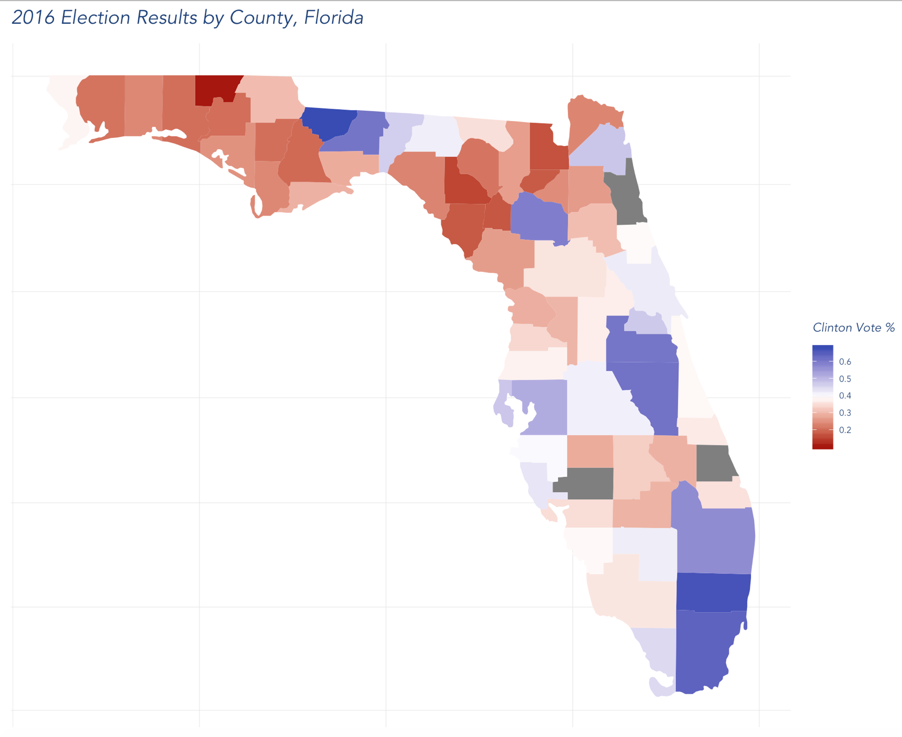
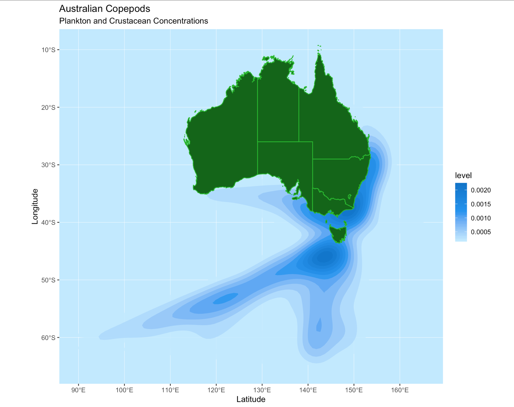
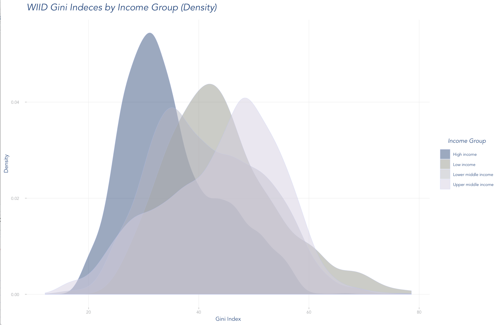
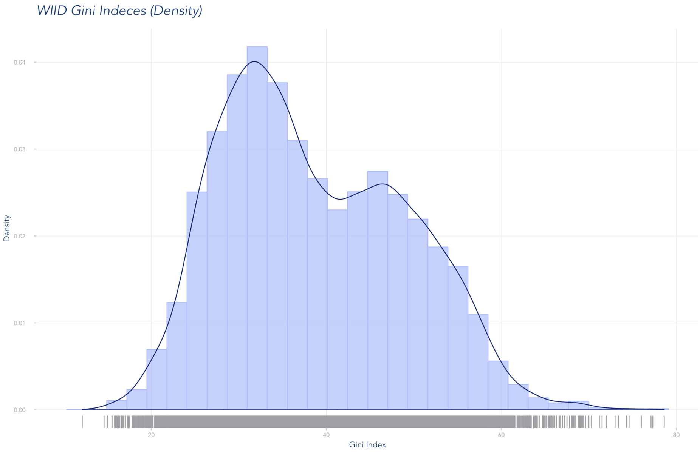
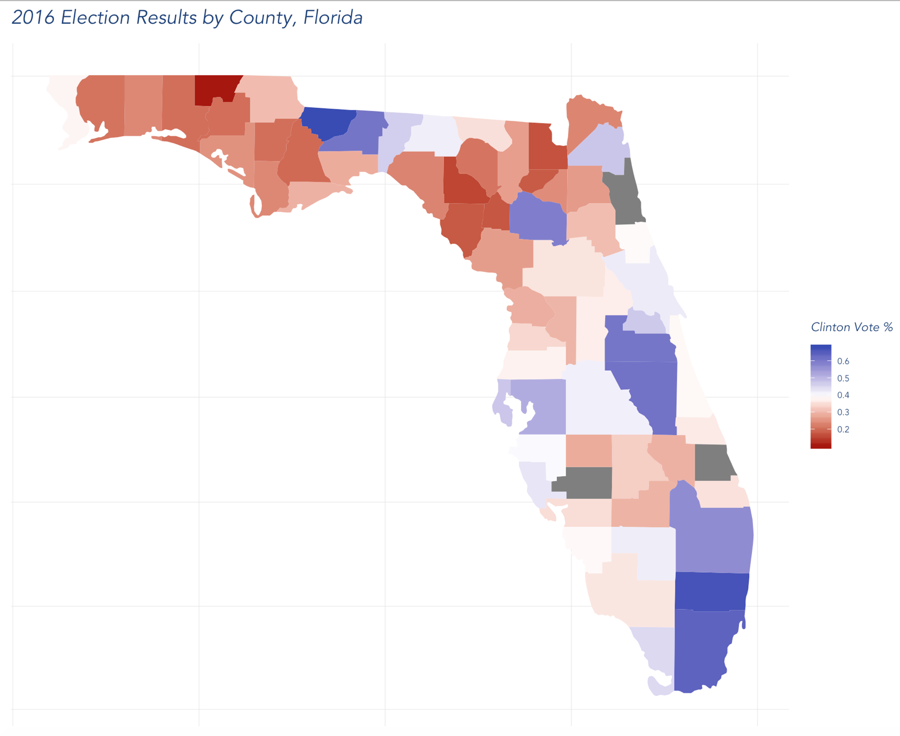
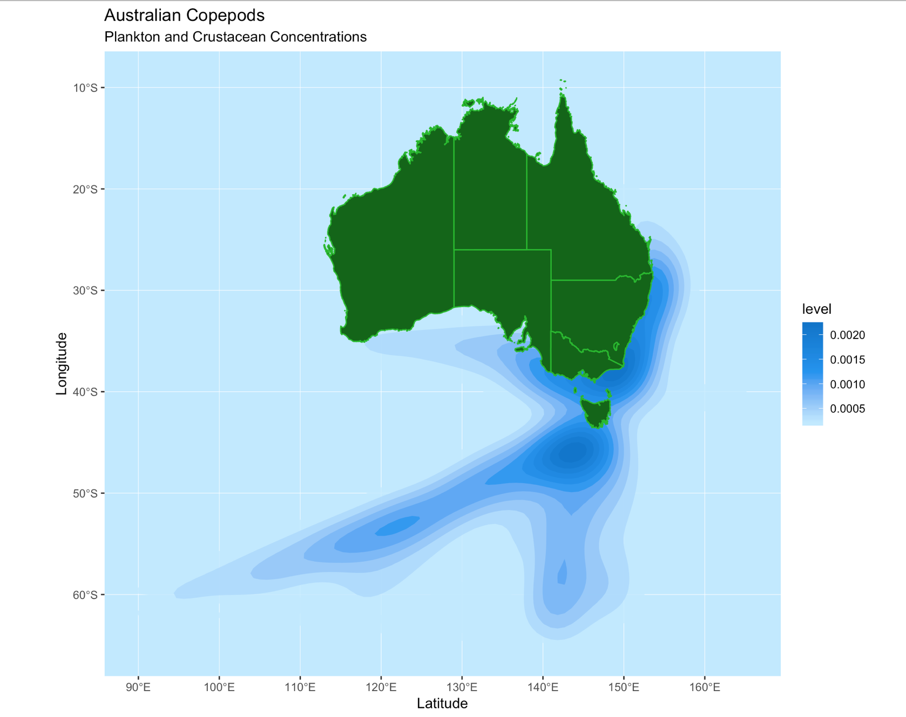
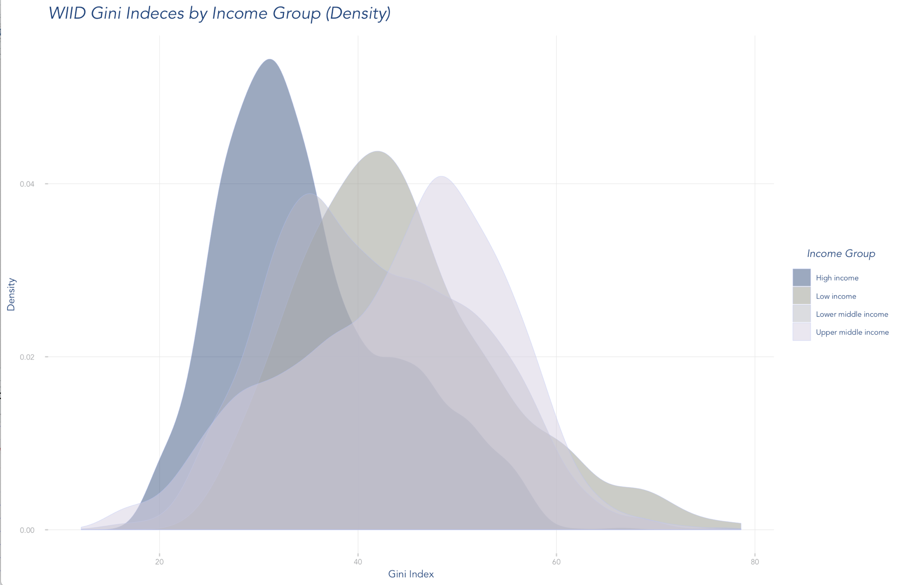
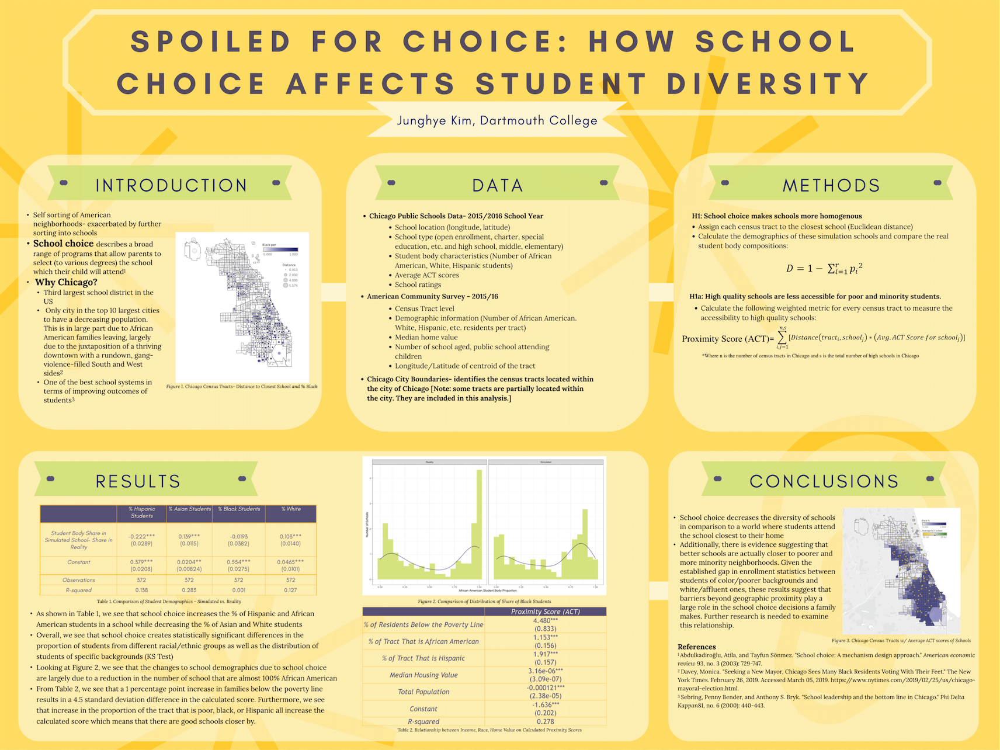

I’m a proud Dartmouth graduate with a degree in Quantitative Social Science which means I literally spent four years trying to understand what makes humans do what they do. My favorite classes include multivariable calculus (weird, I know), game theory, econometrics, and computational text analysis. Other relevant coursework includes linear algebra, political survey research in conjunction with Morning Consult, programming and computation, multivariate analysis, and data visualization. The following are examples of some of my coursework
 







The above data visualizations were made using the dplyr, rvest, and ggplot packages in R. Each dataset was gathered, cleaned, summarized, and created into a visualization by me. Code for these visualizations can be found @ my GitHub
Working Paper: Context and Credibility on Social Media: Platform and News Feed Spillover Effects on Perceived Information Credibility and Engagement Behavior
This paper is the culmination of a term long class titled Experiments in Politics. As a class, we synthesized academic research on the topic, developed an experiment to test the effects of fake news on other news within a newsfeed, put the experiment into the field, collected results, analyzed those results, and presented them in this paper intended for publication.

This poster was created for my culminating project as a QSS major, alongside a journal-length article. For my project, I studied how school choice programs affect the diversity within schools. In order to analyze this question, I collected and cleaned data from the Chicago Public School District, combined this data with the relevant Census data, and wrote an algorithm that assigned each household to their nearest schools to create a pseudo experiment. My results are shared in the above poster which was presented to the department faculty in March 2019.
Beyond the classroom, I have conducted research in both the government and economics departments studying topics such as electoral engagement in college students to African migration patterns. I also spent over 3 years as a Learning Fellow for Dartmouth’s Intro Calculus course. During this time, I worked with students in and out of the classroom to help them with course material and participated in weekly meetings to help professors identify what the students were struggling with. This experience has been integral in my work as a data analyst as it taught me how to effectively communicate complex, quantitative concepts to a range of audiences as well as the importance of tailoring your explanation to meet the audience where they are with their expertise.
This was my first experience using real world data to provide insights for clients. I’m grateful that my time here allowed me to interact with nonprofits, political campaigns, and for-profit corporations because it gave me the chance to work with all the types of data- every structure, every level of cleanliness, and even some screenshots of Excel sheets. Through this, I was able to grow my box of data cleaning tools which has proven incredibly helpful to this day.
Additionally, this internship allowed me to combine the statistical skills I had learned in my classes with the communication skills I had learned as a Learning Fellow. I found that putting myself in clients’ shoes to understand what metrics and explanations would help them make the best decisions was quite similar to putting myself in student’s shoes when I’m trying to explain limits and derivatives to them.
Lastly, this position taught me the importance of being able to zoom in and out as a data analyst. Sometimes, I would find myself stuck on a problem and an hour and seventeen work arounds later, I would have a half solution. I quickly learned that I was getting rabbit holed with these problems and that if only I had been able to zoom out and remember the bigger picture of the analysis, I would have realized that there were other alternatives that could work. This was something that I had yet to learn in the classroom and proved to be an essential skill for my future analyses.
- Excel to clean data
- GIS to map candidate support using Census data
- Postgres SQL to pull data for analysis
- R to clean and visualize data
- Tableau to build dashboards for clients
- ActBlue to scrape fundraising data
- Civis to pull voter files
- Crimson Hexagon, Google Analytics, & Twitter Analytics to pull and anlayze social media data
While 270 gave me a breadth of clients, Glossier gave me depth and a glimpse into the role data plays at an ever growing, direct to consumer, e-commerce brand. During my internship, I learned about a data team’s responsibility in advocating for a data driven culture, worked heavily with the Customer Experience and Logistics teams, and went from Looker novice to pro in just ten weeks.
In working with the CX and logistics teams, I had the opportunity to collaborate and what KPIs would be the most helpful to each team. Then, I would come up with how we would measure them using techniques such as A/B testing, propensity score matching, and probability models. For example, I collaborated with both teams to figure out how utilize Kustomer data associating product issues with order numbers into our data warehouse so this data could be analyzed. In addition to working with these teams, I helped hold company-wide Looker Office Hours to help all teams troubleshoot issues they were having with their Looker dashboards. Before my internship, I had experience with Tableau and SQL which was quite helpful in learning Looker very quickly. Furthermore, these office hours gave me the chance to further my Looker knowledge at a much faster pace while also helping other teams.
Glossier allowed me to see my analyses materialize into business decisions which I found incredibly exciting and helped me understand the big picture role of data in a company while also building on my technical skills and challenging me to solve new problems.
- Python for NLP Analysis & k-means clustering
- SQL to pull and join various datasets from the data warehouse
- R to visualize data and conduct propensity score analysis
- Looker to build and maintain dashboards
- Kustomer to pull data for CX analysis

I’ve always admired Outdoor Voices- not only for the incredibly cute clothing but for the commitment to encouraging us all to do things that bring us joy. To me, that perfectly describes the role of a good analyst. I think data analysis is the helicopter above the corn maze. When you’re in the maze, making decisions about which way to turn, it’s hard to know what’s what since everything just looks like corn. But if you had a helicopter in the sky, laying out what the whole maze looked like, you could make better decisions at every turn. I believe that I have the professional and academic experiences to be one of your helicopters in the sky. I’m inspired by Outdoor Voices’ focus on joy over performance and excited about its rapid growth as a company. I think that my experiences working in such fast-paced environments and my alignment with company values would allow me to be an impactful and valuable member of the Retail team as the company works towards what’s next!